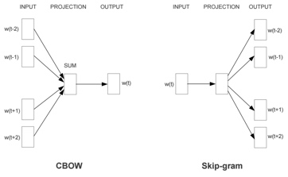
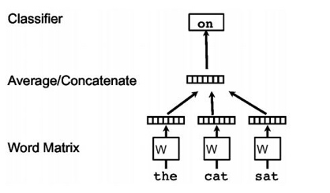
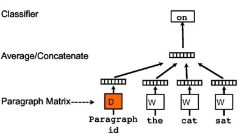
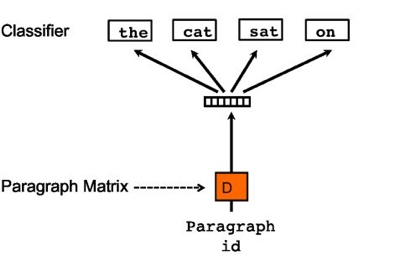

PaperWeekly 第五期
引
Word2Vec从提出至今，已经成为了深度学习在自然语言处理中的基础部件，大大小小、形形色色的DL模型在表示词、短语、句子、段落等文本要素时都需要用word2vec来做word-level的embedding。Word2Vec的作者Tomas Mikolov是一位产出多篇高质量paper的学者，从RNNLM、Word2Vec再到最近流行的FastText都与他息息相关。一个人对同一个问题的研究可能会持续很多年，而每一年的研究成果都可能会给同行带来新的启发，本期的PaperWeekly将会分享其中三篇代表作，分别是：
1、Efficient Estimation of Word Representation in Vector Space, 2013
2、Distributed Representations of Sentences and Documents, 2014
3、Enriching Word Vectors with Subword Information, 2016
Efficient Estimation of Word Representation in Vector Space
作者
Tomas Mikolov, Kai Chen, Greg Corrado, Jeffrey Dean
单位
Google Inc., Mountain View, CA
关键词
Word Representation, Word Embedding, Neural Network, Syntactic Similarity, and Semantic Similarity
来源
arXiv, 201309
问题
如何在一个大型数据集上快速、准确地学习出词表示？
模型
传统的NNLM模型包含四层，即输入层、映射层、隐含层和输出层，计算复杂度很大程度上依赖于映射层到隐含层之间的计算，而且需要指定上下文的长度。RNNLM模型被提出用来改进NNLM模型，去掉了映射层，只有输入层、隐含层和输出层，计算复杂度来源于上一层的隐含层到下一层隐含层之间的计算。
本文提出的两个模型CBOW (Continuous Bag-of-Words Model)和Skip-gram (Continuous Skip-gram Model)结合了上面两个模型的特点，都是只有三层，即输入层、映射层和输出层。CBOW模型与NNLM模型类似，用上下文的词向量作为输入，映射层在所有的词间共享，输出层为一个分类器，目标是使当前词的概率最大。Skip-gram模型与CBOW的输入跟输出恰好相反，输入层为当前词向量，输出层是使得上下文的预测概率最大，如下图所示。训练采用SGD。

资源
Code: C++代码
Dataset: SemEval-2012,用来评估语义相关性。
相关工作
Bengio[1]在2003年就提出了language model的思路，同样是三层（输入层，隐含层和输出层）用上下文的词向量来预测中间词，但是计算复杂度较高，对于较大的数据集运行效率低；实验中也发现将上下文的n-gram出现的频率结合进去会提高性能，这个优点体现在CBOW和Skip-gram模型的输出层中，用hierarchical softmax（with huffman trees）来计算词概率。
简评
本文的实验结果显示CBOW比NNLM在syntactic和semantic上的预测都要好，而Skip-gram在semantic上的性能要优于CBOW，但是其计算速度要低于CBOW。结果显示用较大的数据集和较少的epoch，可以取得较好的效果，并且在速度上有所提升。与LSI和LDA相比，word2vec利用了词的上下文，语义信息更加丰富。基于word2vec，出现了phrase2vec, sentence2vec和doc2vec，仿佛一下子进入了embedding的世界。NLP的这些思想也在用于recommendation等方面，并且与image结合，将image跟text之间进行转换。
Distributed Representations of Sentences and Documents
作者
Quoc V. Le, Tomas Mikolov
单位
Google Inc, Mountain View, CA
关键词
sentence representation
来源
ICML 2014
问题
基于word2vec的思路，如何表示sentence和document？
模型

利用one-hot的表示方法作为网络的输入，乘以词矩阵W，然后将得到的每个向量通过平均或者拼接的方法得到整个句子的表示，最后根据任务要求做一分类，而这过程中得到的W就是词向量矩阵，基本上还是word2vec的思路。
接下来是段落的向量表示方法：

依旧是相同的方法，只是在这里加上了一个段落矩阵，用以表示每个段落，当这些词输入第i个段落时，通过段落id就可以从这个矩阵中得到相对应的段落表示方法。需要说明的是，在相同的段落中，段落的表示是相同的。文中这样表示的动机就是段落矩阵D可以作为一个memory记住在词的context中遗失的东西，相当于增加了一个额外的信息。这样经过训练之后，我们的就得到了段落表示D，当然这个段落就可以是一段或者一篇文章。
最后一种就是没有词序的段落向量表示方法：

从图中就可以感觉到这个方法明显和skip-gram非常相似，这里只是把重点放在了段落的表示中，通过段落的表示，来预测相应的context 词的表示。最后我们依然可以得到段落矩阵D，这样就可以对段落进行向量化表示了。但是输入起码是句子级别的表示，而输出则是词的向量表示，因此个人比较怀疑这种方法的合理性。
简评
这篇文章是word2vec的方法提出一年后提出的方法，因此本文并没有使用目前非常流行的word2vec的训练方法来训练词向量，而是利用word2vec的思路，提出了一种更加简单的网络结构来训练任意长度的文本表示方法。这样一方面好训练，另一方面减少了参数，避免模型过拟合。优点就是在训练paragraph vector的时候加入了一个paragraph matrix，这样在训练过程中保留了一部分段落或者文档信息。这点在目前看来也是有一定优势的。但是目前深度学习发展迅速，可以处理非常大的计算量，同时word2vec以及其变种被应用得非常普遍，因此该文章提出的方法思路大于模型，思路我们可以借鉴，模型就不具有优势了。
Enriching Word Vectors with Subword Information
作者
Piotr Bojanowski, Edouard Grave, Armand Joulin, Tomas Mikolov
单位
Facebook AI Research
关键词
Word embedding, morphological, character n-gram
来源
arXiv, 201607
问题
如何解决word2vec方法中罕见词效果不佳的问题，以及如何提升词形态丰富语言的性能？
模型
word2vec在词汇建模方面产生了巨大的贡献，然而其依赖于大量的文本数据进行学习，如果一个word出现次数较少那么学到的vector质量也不理想。针对这一问题作者提出使用subword信息来弥补这一问题，简单来说就是通过词缀的vector来表示词。比如unofficial是个低频词，其数据量不足以训练出高质量的vector，但是可以通过un+official这两个高频的词缀学习到不错的vector。
方法上，本文沿用了word2vec的skip-gram模型，主要区别体现在特征上。word2vec使用word作为最基本的单位，即通过中心词预测其上下文中的其他词汇。而subword model使用字母n-gram作为单位，本文n取值为3~6。这样每个词汇就可以表示成一串字母n-gram，一个词的embedding表示为其所有n-gram的和。这样我们训练也从用中心词的embedding预测目标词，转变成用中心词的n-gram embedding预测目标词。
实验分为三个部分，分别是（1）计算两个词之间的语义相似度，与人类标注的相似度进行相关性比较；（2）与word2vec一样的词类比实验；（3）与其他考虑morphology的方法比较。结果是本文方法在语言形态丰富的语言（土耳其语，法语等）及小数据集上表现优异，与预期一致。
资源
源码公布在Facebook的fastText项目中： https://github.com/facebookresearch/fastText
相关工作
利用语言形态学来改进nlp的研究源远流长，本文提及的许多关于character-level和morphology的有趣工作值得参考。
简评
文章中提出的思路对于morphologically rich languages（例如土耳其语，词缀的使用极为普遍而有趣）来说十分有意义。词缀作为字母与单词之间的中层单位，本身具有一定的语义信息。通过充分利用这种中层语义来表征罕见词汇，直观上讲思路十分合理，也是应用了compositionality的思想。
利用形态学改进word embedding的工作十分丰富，但中文NLP似乎很难利用这一思路。其实个人感觉中文中也有类似于词缀的单位，比如偏旁部首等等，只不过不像使用字母系统的语言那样容易处理。期待今后也有闪光的工作出现在中文环境中。
总结
从Word2Vec到FastText，从word representation到sentence classification，Tomas Mikolov的工作影响了很多人。虽然有个别模型和实验结果曾遭受质疑，但终究瑕不掩瑜。word2vec对NLP的研究起到了极大地推动作用，其实不仅仅是在NLP领域中，在其他很多领域中都可以看到word2vec的思想和作用，也正是从word2vec开始，这个世界变得都被vector化了，person2vec，sentence2vec，paragraph2vec，anything2vec，world2vec。
以上为本期Paperweekly的主要内容，感谢memray、zhkun、gcyydxf、jell四位同学的整理。
广告时间
PaperWeekly是一个分享知识和交流学问的民间组织，关注的领域是NLP的各个方向。如果你也经常读paper，也喜欢分享知识，也喜欢和大家一起讨论和学习的话，请速速来加入我们吧。
微信公众号：PaperWeekly
微博账号：PaperWeekly（http://weibo.com/u/2678093863 ）
知乎专栏：PaperWeekly（https://zhuanlan.zhihu.com/paperweekly ）
微信交流群：微信+ zhangjun168305（请备注：加群 or 加入paperweekly）